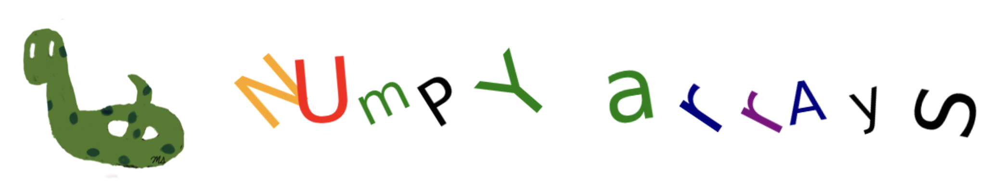

Numpy Arrays#

Motivation#
Let’s attempt to multiply each element of a list by 10.
The
*operator repeats the list elements.If we use the
*operator on a list, instead of multiplying each element by 10, it replicates the initial list 10 times, as shown in the following code:
list1 = [1,2,3]
print(list1*10)
[1, 2, 3, 1, 2, 3, 1, 2, 3, 1, 2, 3, 1, 2, 3, 1, 2, 3, 1, 2, 3, 1, 2, 3, 1, 2, 3, 1, 2, 3]
We can multiply each element of a list using list comprehensions.
new_list = [i*10 for i in list1]
print(new_list)
[10, 20, 30]
However, it’s quite common to multiply each element of a sequence by a fixed number, and there should be a more efficient way to accomplish this.
NumPy arrays interpret the
*operator as multiplication, not repetition.
import numpy as np
array1 = np.array([1,2,3])
print(array1)
[1 2 3]
print(array1*10)
[10 20 30]
There’s a similar situation with the + operator.
For lists, + concatenates elements, whereas for NumPy arrays, it performs componentwise addition.
list1 = [1,2,3]
list2 = [4,5,6]
print(list1+list2)
[1, 2, 3, 4, 5, 6]
array1 = np.array([1,2,3])
array2 = np.array([4,5,6])
print(array1+array2)
[5 7 9]

Numpy#
Numpy is the foundational package for scientific computing in Python.
Numpy’s primary data structure is arrays.
Arrays are known for their speed and versatility.
They enable vectorized operations.
Indexing facilitates accessing values within an array.
NumPy offers a comprehensive collection of mathematical tools for various computations, encompassing:
Matrix operations
Generation of random numbers
Mathematical and statistical functions
NumPy methods can be used for importing and manipulating images.
NumPy is the foundation for powerful machine learning libraries like scikit-learn and SciPy.
It’s customary to import the
numpypackage under the aliasnpfor brevity and clarity in code.
import numpy as np
Numpy Arrays#
A NumPy array, also known as ndarray, is a multidimensional array.
You can perform mathematical and statistical operations on arrays.
Manipulations such as reshaping, sorting, stacking, transposing, and shuffling arrays are possible.
The np.array() method is used to create an array. The following code generates a 2 by 3 matrix.
myarray = np.array([ [1,2,3], [4,5,6]])
print(myarray)
[[1 2 3]
[4 5 6]]
The type of a NumPy array is ndarray.
print(type(myarray))
<class 'numpy.ndarray'>
Dimensions#
The dimension of a numpy array is the number of axes along which the array extends.
Examples:
Vector: A one-dimensional array. It has only one axis.
Matrix (Grid): A two-dimensional array. It has two axes.
The dimension of an array indicates the number of indices required to specify an element within the array.
The dimension of an array can be determined using the
ndim.
0-dimension#
Its elements consist of scalars.
myarray0 = np.array(5)
print(myarray0.ndim)
0
1-dimension#
Its elements consist of 0-dimensional arrays.
1,2,3,4 are 0 dimensional.
myarray1 = np.array([1,2,3,4])
print(myarray1.ndim)
1
2-dimension#
Its elements consist of 1-dimensional arrays.
[1,2] annd [3,4] are 1-dimensional.
myarray2 = np.array([[1,2],[3,4]])
print('Dimension:', myarray2.ndim)
print('='*15)
print( myarray2)
Dimension: 2
===============
[[1 2]
[3 4]]
3-dimension#
Its elements consist of 2-dimensional arrays.
[[1,2],[3,4]], [[5,6],[7,8]], [[9,10],[11,12]] are 2-dimensional.
myarray3 = np.array( [[[1,2],[3,4]],[[5,6],[7,8]], [[9,10],[11,12]]] )
print('Dimension:', myarray3.ndim)
print('='*10)
print( myarray3)
Dimension: 3
==========
[[[ 1 2]
[ 3 4]]
[[ 5 6]
[ 7 8]]
[[ 9 10]
[11 12]]]
Shape#
The shape of a numpy array is the number of elements in each dimension.
Since the dimension of the following array is 3, its shape consists of three numbers.
myarray = np.array( [[[1,1,1,1],[2,2,2,2], [3,3,3,3]], [[4,4,4,4],[5,5,5,5], [6,6,6,6]]] )
print('Dimension:', myarray3.ndim)
print('-'*15)
print( myarray)
Dimension: 3
---------------
[[[1 1 1 1]
[2 2 2 2]
[3 3 3 3]]
[[4 4 4 4]
[5 5 5 5]
[6 6 6 6]]]
In the first dimension: There are two elements: [[1,1,1,1],[2,2,2,2], [3,3,3,3]] and [[4,4,4,4],[5,5,5,5], [6,6,6,6]]].
In the second dimension each element has 3 elements.
[[1,1,1,1],[2,2,2,2], [3,3,3,3]] has 3 elements [1,1,1,1],[2,2,2,2], and [3,3,3,3].
[[4,4,4,4],[5,5,5,5], [6,6,6,6]] has 3 elements [4,4,4,4],[5,5,5,5], and [6,6,6,6].
In the third dimension there are 4 elements of each element.
[1,1,1,1], [2,2,2,2],…., [6,6,6,6] are all have four elements.
print('Shape :', myarray.shape)
Shape : (2, 3, 4)
Example
myarray = np.array( [[[1],[2], [3]]] )
print('Dimension:', myarray.ndim)
print('Shape :', myarray.shape)
print('-'*15)
print( myarray)
Dimension: 3
Shape : (1, 3, 1)
---------------
[[[1]
[2]
[3]]]
In the first dimension: There is only elements: [[1],[2], [3]].
In the second dimension: [[1],[2], [3]] has 3 elements.
In the third dimension: there is 1 element of each element.
[1],[2], [3] are all have one element.
Example
myarray = np.array( [[[[1]]]] )
print('Dimension:', myarray.ndim)
print('Shape :', myarray.shape)
print('-'*15)
print( myarray)
Dimension: 4
Shape : (1, 1, 1, 1)
---------------
[[[[1]]]]
In the first dimension: There is only elements: [[[1]]].
In the second dimension: [[[1]]] has 1 element: [[1]]
In the third dimension: [[1]] has 1 element: [1].
In the fourth dimension: [1] has 1 element: 1.
Size#
The total number of elements.
myarray = np.array( [[[1],[2], [3]]] )
print('Dimension:', myarray.ndim)
print('Shape :', myarray.shape)
print('Size :', myarray.size)
print('-'*15)
print( myarray)
Dimension: 3
Shape : (1, 3, 1)
Size : 3
---------------
[[[1]
[2]
[3]]]
myarray = np.array( [[[1,1,1,1],[2,2,2,2], [3,3,3,3]], [[4,4,4,4],[5,5,5,5], [6,6,6,6]]] )
print('Dimension:', myarray.ndim)
print('Shape :', myarray.shape)
print('Size :', myarray.size)
print('-'*15)
print( myarray)
Dimension: 3
Shape : (2, 3, 4)
Size : 24
---------------
[[[1 1 1 1]
[2 2 2 2]
[3 3 3 3]]
[[4 4 4 4]
[5 5 5 5]
[6 6 6 6]]]
Indexing#
Indexing of ndarrays involves square brackets, just like with lists.
When using indexing, you can consider the ndarray as lists of lists.
myarray = np.array( [[3, 5, 7], [2, 9, 8]] )
print(myarray)
[[3 5 7]
[2 9 8]]
# index 0 element of [[3, 5, 7], [2, 9, 8]]
myarray[0]
array([3, 5, 7])
# index 2 element of 3, 5, 7
myarray[0][2]
7
\([0][2] = [0,2]\)
# row index: 0, column index:2
myarray[0,2]
7
Slicing#
The colon (:) is used for slicing, just like with lists.
# all rows, columns starting from index 1
myarray[:,1:]
array([[5, 7],
[9, 8]])
Array Methods#
reshape()#
The reshape() method generates a new array with the specified shape.
array1 = np.array([1,2,3,4,5,6])
print('Dimension:', array1.ndim)
print('Shape :', array1.shape)
Dimension: 1
Shape : (6,)
array2 = array1.reshape(2,3)
print('Dimension:', array2.ndim)
print('Shape :', array2.shape)
Dimension: 2
Shape : (2, 3)
sum()#
sum(): sum of all elements
sum(0): sum for each column
sum(1): sum for each row
myarray = np.array( [[1,2,3],[4,5,6]] )
print(myarray)
[[1 2 3]
[4 5 6]]
# 1+2+3+4+5+6
print(myarray.sum())
21
# 1+4=5
# 2+5=7
# 3+6=9
print(myarray.sum(0))
[5 7 9]
# 1+2+3=6
# 4+5+6=15
print(myarray.sum(1))
[ 6 15]
min()#
min(): minimum of all elements
min(0): minimum for each column
min(1): minimum for each row
myarray = np.array( [ [3,5,7], [2,9,8] ] )
print(myarray)
[[3 5 7]
[2 9 8]]
# minimum of 3, 5, 7, 2, 9, 8
print(myarray.min())
2
# minimum of 3, 2
# minimum of 5, 9
# minimum of 7, 8
print(myarray.min(0))
[2 5 7]
# minimum of 3, 5, 7
# minimum of 2, 9, 8
print(myarray.min(1))
[3 2]
max()#
max(): maximum of all elements
max(0): maximum for each column
max(1): maximum for each row
myarray = np.array( [ [3,5,7], [2,9,8] ] )
print(myarray)
[[3 5 7]
[2 9 8]]
# maximum of 3, 5, 7, 2, 9, 8
print(myarray.max())
9
# maximum of 3, 2
# maximum of 5, 9
# maximum of 7, 8
print(myarray.max(0))
[3 9 8]
# maximum of 3, 5, 7
# maximum of 2, 9, 8
print(myarray.max(1))
[7 9]
sort()#
The sort() method sorts the values in an array and modifies the original array.
myarray = np.array( [1,9,4,0,2,7,5] )
myarray.sort()
print(myarray)
[0 1 2 4 5 7 9]
argmin()#
The argmin() method returns the index of the minimum element.
# minimum element: 3
# index of 3 is 1
myarray = np.array( [5,3,9,6])
print(myarray.argmin())
1
argmax()#
The argmax() method returns the index of the maximum element.
# maximum element: 9
# index of 9 is 2
myarray = np.array( [5,3,9,6])
print(myarray.argmax())
2
Numpy Methods#
hstack()#
The hstack() method combines arrays column-wise or horizontally.
array1 = np.array([1,2,3])
array2 = np.array([4,5,6])
print(np.hstack([array1, array2]))
[1 2 3 4 5 6]
vstack()#
The hstack() method combines arrays row-wise or vertically.
array1 = np.array([1,2,3])
array2 = np.array([4,5,6])
print(np.vstack([array1, array2]))
[[1 2 3]
[4 5 6]]
linspace()#
The linspace() method calculates and returns a specific number of evenly spaced samples within the provided interval, including both the start and stop values.
You can choose whether or not to include the endpoint of the interval.
The following code generates 20 numbers starting from 2 and ends up at 10.
The difference between each consecutive number is \((10-2)/(20-1)\)
1 is subtracted from 20 because there are 19 intervals between 20 numbers.
np.linspace(2,10,20)
array([ 2. , 2.42105263, 2.84210526, 3.26315789, 3.68421053,
4.10526316, 4.52631579, 4.94736842, 5.36842105, 5.78947368,
6.21052632, 6.63157895, 7.05263158, 7.47368421, 7.89473684,
8.31578947, 8.73684211, 9.15789474, 9.57894737, 10. ])
dot()#
The dot() method returns the dot product of two vectors, which is the sum of their componentwise products.
Example:
\( [1,2,3] \cdot [4,5,6] = 1\cdot 4 + 2\cdot 5+ 3\cdot 6 = 4+10+18=32 \)
array1 = np.array([1,2,3])
array2 = np.array([4,5,6])
print(np.dot(array1,array2))
32
cross()#
The cross() method returns the cross product of two vectors.
array1 = np.array([1,2,3])
array2 = np.array([4,5,6])
print(np.cross(array1,array2))
[-3 6 -3]
Images#
Images can be stored as ndarrays and modified using array methods.
2-Dimensional Images#
matplotlib.pyplot is used to plot images.
By default, the colormap is viridis (yellow-blue).
The smallest number in the ndarray corresponds to blue, while the largest represents yellow.
For additional colormap options, refer to the following link: colormaps
In gray colormap, the smallest number in the ndarray represents black, and the largest one represents white.
myarray = np.array([[1,4,7,10,1]])
For the given ndarray above and the viridis colormap:
The largest number, 10, corresponds to yellow.
The smallest number, 1, corresponds to (dark) blue
import matplotlib.pyplot as plt
plt.imshow(myarray)
plt.axis('off'); # remove axis
For the given ndarray above and the gray colormap:
The largest number, 10, corresponds to white.
The smallest number, 1, corresponds to black
plt.imshow(myarray, 'gray')
plt.axis('off'); # remove axis
# 1: yellow
# 2: blue
myarray = np.array([[1,0], [0,1]])
plt.figure(figsize=(3,3))
plt.imshow(myarray)
plt.axis('off'); # remove axis
# 1: white
# 2: black
myarray = np.array([[1,0], [0,1]])
plt.figure(figsize=(3,3))
plt.imshow(myarray, 'gray');
Digits Dataset#
The digits dataset in sklearn library consists of 1797 pictures of handwritten digits.
Each picture is represented as an 8 by 8 pixel image, resulting in relatively low picture quality.
We import load_digits() from sklearn.datasets module
Its type is Bunch, which is similar to dictionaries.
from sklearn.datasets import load_digits
dataset = load_digits()
print(type(dataset))
<class 'sklearn.utils._bunch.Bunch'>
The images are in the value correspond to the key images.
You can also use the key DESCR as follows, to access more about the dataset.
print(dataset.DESCR)
print(dataset.keys())
dict_keys(['data', 'target', 'frame', 'feature_names', 'target_names', 'images', 'DESCR'])
There are 1797 images in this dataset.
Each picture is represented by an 8 by 8 ndarray.
print(dataset.images.shape)
(1797, 8, 8)
The first image in the dataset:
image0 = dataset.images[0]
print(image0.shape)
(8, 8)
print(image0)
[[ 0. 0. 5. 13. 9. 1. 0. 0.]
[ 0. 0. 13. 15. 10. 15. 5. 0.]
[ 0. 3. 15. 2. 0. 11. 8. 0.]
[ 0. 4. 12. 0. 0. 8. 8. 0.]
[ 0. 5. 8. 0. 0. 9. 8. 0.]
[ 0. 4. 11. 0. 1. 12. 7. 0.]
[ 0. 2. 14. 5. 10. 12. 0. 0.]
[ 0. 0. 6. 13. 10. 0. 0. 0.]]
plt.figure(figsize=(1,1))
plt.imshow(image0, 'gray')
plt.axis('off');
The second image in the dataset.
image1 = dataset.images[1]
print(image1.shape)
(8, 8)
plt.figure(figsize=(1,1))
plt.imshow(image1, 'gray')
plt.axis('off');
Face Dataset#
The fetch_lfw_people dataset contains images of famous individuals.
The parameter min_faces_per_person determines the inclusion of images for individuals who have more than the specified number of pictures in the dataset.
from sklearn.datasets import fetch_lfw_people
dataset = fetch_lfw_people(min_faces_per_person=50)
print(dataset.keys())
dict_keys(['data', 'images', 'target', 'target_names', 'DESCR'])
There are 1560 images in this dataset.
Each picture is represented by an 62 by 47 ndarray.
print(dataset.images.shape)
(1560, 62, 47)
The first image in the dataset:
image0 = dataset.images[0]
print(image0.shape)
(62, 47)
print(image0)
[[0.3150327 0.33333334 0.39738563 ... 0.22352941 0.2784314 0.30588236]
[0.3385621 0.34901962 0.40392157 ... 0.15555556 0.22745098 0.3124183 ]
[0.36078432 0.38039216 0.37124184 ... 0.17254902 0.18431373 0.2496732 ]
...
[0.18692811 0.18431373 0.1751634 ... 0.6640523 0.4366013 0.3124183 ]
[0.18692811 0.18954249 0.18169935 ... 0.58300656 0.54640526 0.3895425 ]
[0.18692811 0.18562092 0.18039216 ... 0.5254902 0.606536 0.46535948]]
The target of the first image is 11.
This is the index of the name of the person in target names.
print(dataset.target[0])
11
This image belongs to Tony Blair.
dataset.target_names[11]
'Tony Blair'
plt.imshow(image0, 'gray')
plt.axis('off');